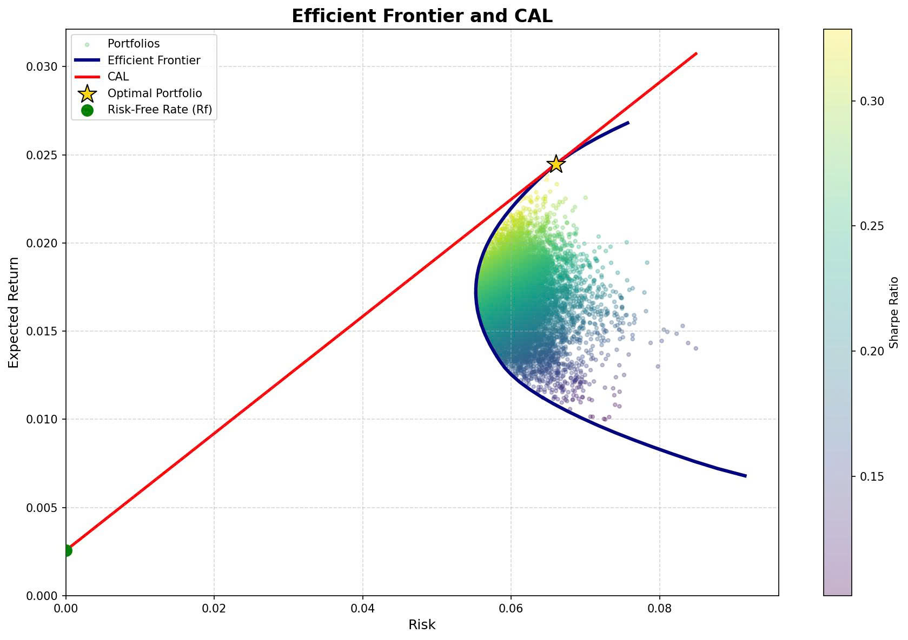

| Option | Portfolio | w_i | w_j | w_k | E(Rp) | Var(Rp) | Stdev(Rp) | Sharpe | Assessment |
|---|---|---|---|---|---|---|---|---|---|
| 1 | FPT-HPG-BID | 80% | 10% | 10% | 2.34% | 0.46% | 6.81% | 0.3060 | Moderate return, moderate risk |
| 2 | FPT-HPG-MWG | 80% | 10% | 10% | 2.46% | 0.49% | 7.00% | 0.3155 | High return, high risk |
| 3 | FPT-HPG-REE | 70.52% | 10% | 19.48% | 2.37% | 0.43% | 6.57% | 0.3214 | Balanced return, moderate risk |
| 4 | FPT-BID-MWG | 79.21% | 10% | 10.79% | 2.40% | 0.45% | 6.74% | 0.3181 | Balanced return, moderate risk |
| 5 | FPT-BID-REE | 69.66% | 10% | 20.34% | 2.30% | 0.40% | 6.31% | 0.3241 | Lowest risk, stable return |
| 6 | FPT-MWG-REE | 70.48% | 10% | 19.52% | 2.43% | 0.43% | 6.57% | 0.3316 | Highest Sharpe, best performance |
| 7 | HPG-BID-MWG | 14% | 10% | 76% | 1.71% | 0.63% | 7.92% | 0.1840 | Lowest return, highest risk |
| 8 | HPG-BID-REE | 13.42% | 10% | 76.58% | 1.62% | 0.45% | 6.69% | 0.2042 | Low return, moderate risk |
| 9 | HPG-MWG-REE | 10% | 35.31% | 54.69% | 1.80% | 0.45% | 6.69% | 0.2303 | Moderate return, moderate risk |
| 10 | BID-MWG-REE | 10% | 36.36% | 53.64% | 1.74% | 0.41% | 6.42% | 0.2309 | Moderate return, relatively low risk |
| E(Rm) | Rf | Standard Deviation | Sharpe |
|---|---|---|---|
| 0.95% | 0.26% | 5.44% | 12.77% |

| A | Rf |
|---|---|
| 5.0804 | 0.26% |
| No. | Portfolio | E(Rp) | σ(p) | y* | 1 - y* | E(Rc) | σ(c) | U |
|---|---|---|---|---|---|---|---|---|
| 1 | FPT-HPG-BID | 2.34% | 6.81% | 88.45% | 11.55% | 2.10% | 6.02% | 0.0118 |
| 2 | FPT-HPG-MWG | 2.46% | 7.00% | 88.72% | 11.28% | 2.22% | 6.21% | 0.0124 |
| 3 | FPT-HPG-REE | 2.37% | 6.57% | 96.24% | 3.76% | 2.29% | 6.33% | 0.0127 |
| 4 | FPT-BID-MWG | 2.40% | 6.74% | 92.92% | 7.08% | 2.25% | 6.26% | 0.0125 |
| 5 | FPT-BID-REE | 2.30% | 6.31% | 100.00% | 0.00% | 2.30% | 6.31% | 0.0129 |
| 6 | FPT-MWG-REE | 2.43% | 6.57% | 99.35% | 0.65% | 2.42% | 6.53% | 0.0134 |
| 7 | HPG-BID-MWG | 1.71% | 7.92% | 45.74% | 54.26% | 0.92% | 3.62% | 0.0059 |
| 8 | HPG-BID-REE | 1.62% | 6.69% | 60.11% | 39.89% | 1.08% | 4.02% | 0.0067 |
| 9 | HPG-MWG-REE | 1.80% | 6.69% | 67.74% | 32.26% | 1.30% | 4.53% | 0.0078 |
| 10 | BID-MWG-REE | 1.74% | 6.42% | 70.75% | 29.25% | 1.31% | 4.54% | 0.0078 |
| Type | Allocation (%) | Investment (VND) |
|---|---|---|
| Risky Portfolio | 99.35% | 168,891,022 |
| Risk-free Assets | 0.65% | 1,108,978 |
| Stock | Allocation (%) | Investment (VND) |
|---|---|---|
| FPT | 70.48% | 119,028,502 |
| MWG | 10% | 16,889,102 |
| REE | 19.52% | 32,973,419 |
| Market risk | Industry risk | Liquidity risk | Company-specific risk | Interest rate & macroeconomic risk | |
|---|---|---|---|---|---|
| Impact | Whenever the overall market experiences a downturn or significant volatility, the portfolio value may decline even if the underlying stocks have strong fundamentals. | The investment portfolio is largely concentrated in a few sectors, primarily technology (FPT), retail (MWG), and energy (REE). If all three sectors experience a downturn, the overall portfolio performance would be significantly affected. | In the event of a sharp market downturn, liquidating certain stocks such as MWG or REE Corporation may be more difficult due to their relatively lower liquidity compared to FPT Corporation. | Internal issues such as poor corporate governance, slowing growth, or legal risks may lead to a significant decline in stock prices. | When interest rates rise, capital tends to shift from equities to safer investment channels such as bonds or real estate, which may exert downward pressure on stock prices. |
| Example |
During major crises such as the 2008 Global Financial Crisis or the COVID-19 pandemic, stock markets experienced sharp declines. As a result, even fundamentally strong stocks such as FPT Corporation were significantly affected and saw substantial price drops. In the case where the VN-Index enters a strong correction phase, the entire investment portfolio is likely to be negatively impacted to some extent. |
If global technology investment slows down, the growth prospects of FPT Corporation may be adversely impacted. Similarly, changes in retail policies or a decline in the adoption of alternative energy could negatively affect the revenues of Mobile World Investment Corporation and REE Corporation. |
Stock prices may decline significantly, but there may not be sufficient buyers in the market to execute sales at the desired price. |
For FPT Corporation, performance may be adversely affected if the company misses major contract opportunities or faces intense competition from global technology corporations. For Mobile World Investment Corporation and REE Corporation, legal issues related to retail policies or potential technical violations during project implementation may negatively impact their operations and stock performance. |
If the State Bank of Vietnam increases interest rates, firms may face higher capital costs, leading to a decline in profitability. High inflation may also reduce consumer spending, thereby negatively affecting revenue growth, particularly for companies such as FPT Corporation. |
| Strategies | Diversification | Portfolio Rebalancing | Hedging Strategy | Macroeconomic and Company Monitoring | Psychological Risk Management |
|---|---|---|---|---|---|
| Action |
Maintain a significant allocation to FPT Corporation while diversifying the portfolio by adding stocks from other sectors such as financials, consumer goods, and manufacturing. Potential additions may include GAS, PNJ, VNM, VCG, Viettinbank or Vietcombank. |
If FPT Corporation experiences a strong price increase and accounts for 85% of the portfolio, partial profit-taking should be implemented to reduce concentration risk. If Mobile World Investment Corporation or REE Corporation show signs of deterioration, they may be replaced with more stable stocks. |
Utilize covered warrants (CW) to hedge against potential declines in stock prices. Employ VN30 Index futures contracts or other derivative instruments during periods of significant market volatility. |
Regularly monitor macroeconomic indicators such as GDP, interest rates, exchange rates, and monetary policy. Analyze the quarterly financial statements of FPT, MWG, and REE to ensure stable operational performance. |
The investor shall avoid panic selling during significant market declines; instead, they shall reassess the intrinsic value and long-term potential of the businesses. The investor shall not follow herd behavior or succumb to FOMO when considering purchases of stocks at elevated prices without thorough analysis. |
| Benefits |
Reduce concentration risk in one or two sectors. Enhance the portfolio’s resilience to sector-specific fluctuations. |
Maintain a well-balanced asset allocation. Ensure the portfolio remains aligned with the investor’s risk tolerance and investment objectives. |
Mitigate potential losses during market downturns. Help preserve returns even under unfavorable market conditions. |
Helps adjust the portfolio in a timely manner before risks arise. Avoids continuing to invest in stocks that show signs of weakening. |
This approach mitigates losses arising from emotional decision-making. It also reinforces investment discipline and adherence to a long-term strategy. |
| Conclusion |
|---|
| This portfolio is designed to achieve attractive returns while maintaining a reasonable level of risk. With an expected return of approximately 2.43% per month and a volatility of around 6.57%, it offers a balanced trade-off between growth and risk control. Notably, the expected return of the portfolio meets Mr. Nam’s required rate of return, indicating that the investment strategy is aligned with his financial objectives. Compared to the VN-Index, the portfolio delivers significantly higher returns, making it suitable for investors seeking capital appreciation with moderate risk tolerance. The portfolio benefits from diversification across FPT, MWG, and REE, representing technology, retail, and infrastructure sectors. This combination helps reduce overall risk while maintaining strong growth potential. Built on modern portfolio theory, the portfolio demonstrates an effective allocation strategy that enhances performance and resilience under different market conditions. |
| Investment |
|---|
| To further enhance portfolio performance and risk management, periodic rebalancing should be implemented (e.g., quarterly or semi-annually) to maintain the target asset allocation and adapt to market fluctuations. This approach helps lock in gains from outperforming stocks while controlling downside risk. In addition, the portfolio strategy should be continuously reviewed based on macroeconomic factors such as interest rates, inflation, and overall market trends to ensure long-term sustainability and alignment with the investor’s risk tolerance. Moreover, investors should proactively communicate and update any changes in their personal financial situation, investment objectives, or risk tolerance, as these factors may directly affect the Investment Policy Statement. Timely updates help ensure that the portfolio remains aligned with long-term goals and the investor’s actual circumstances. |